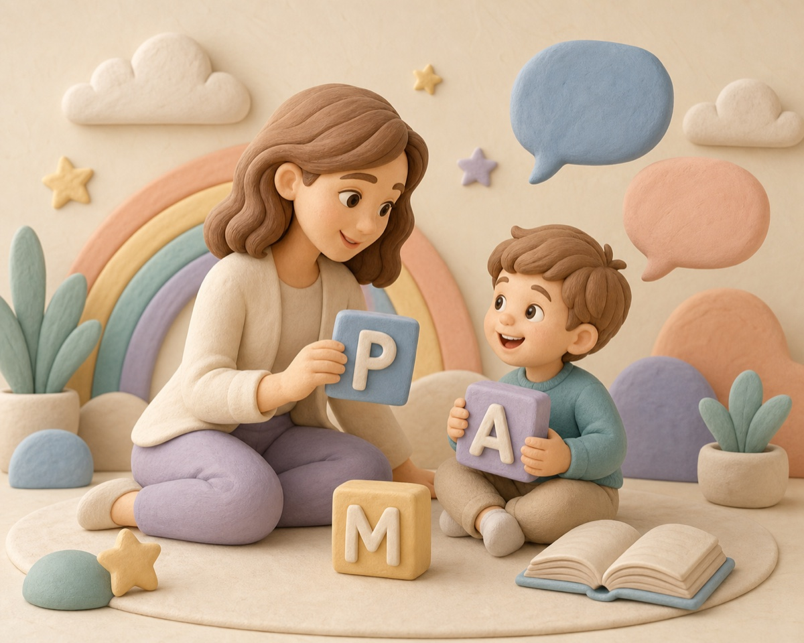

Малыши
Первые слова, запуск речи и общение без стресса.
Диагностика, индивидуальные занятия и подготовка к школе. Бережно развиваем речь, внимание и уверенность ребёнка.

Первые слова, запуск речи и общение без стресса.
Звуки, словарный запас, внимание и готовность к школе.
Чтение, письмо, дисграфия, дислексия и учебная уверенность.
Дикция, публичная речь и восстановление после заболеваний.
Подберём формат работы с учётом задач ребёнка и подробно расскажем, как будет проходить программа.
Логопедический массаж + коррекционные занятия
Спокойно общаемся с ребёнком и родителем.
Определяем причины, сильные стороны и задачи.
Согласуем цели, формат и ритм занятий.
Развиваем навыки без страха ошибки.
Даём короткие и понятные упражнения домой.
Отслеживаем динамику и корректируем маршрут.
Родитель понимает, что уже получается и над чем работаем дальше.
Ребёнок включается в задачу без давления и страха.
Короткие упражнения легко встроить в обычный день.
Речь, дыхание, моторика, внимание и память работают вместе.
Не ругаем за ошибки и не сравниваем детей между собой.
Темп, материалы и сложность заданий подбираем под ребёнка.
Нажмите на карточку, чтобы узнать об опыте и квалификации специалиста, а также посмотреть документы об образовании.
Уважаемые родители! Открыт набор на программы подготовки к школе. Мы помогаем детям не просто научиться читать и считать, а полюбить учиться, развить мышление, внимание и память.
В группе до 6 человек. Это позволяет уделить внимание каждому ребёнку, увидеть его сильные стороны, помочь преодолеть трудности и создать комфортную атмосферу, в которой хочется учиться.
Кроме групповых, ведётся набор на индивидуальные занятия — если ребёнку необходим персональный подход или индивидуальный темп обучения.
Для поступления в профильные классы и уверенной работы с задачами повышенной сложности.
Программа для детей, для которых русский язык не является родным: речь, чтение, письмо, математика и уверенная адаптация к школе.
г. Раменское, ул. Красноармейская, 13 • Центр речи «Будущее»
«Уже через месяц сын стал чётче произносить шипящие. Домашние задания короткие и интересные!»
«Перестала заикаться в стрессовых ситуациях, появилась уверенность в речи.»
«Индивидуальный подход и отчёт по прогрессу каждые 2 недели — супер!»
Оставьте заявку на диагностику. Мы познакомимся с ребёнком, ответим на вопросы и предложим подходящую программу.